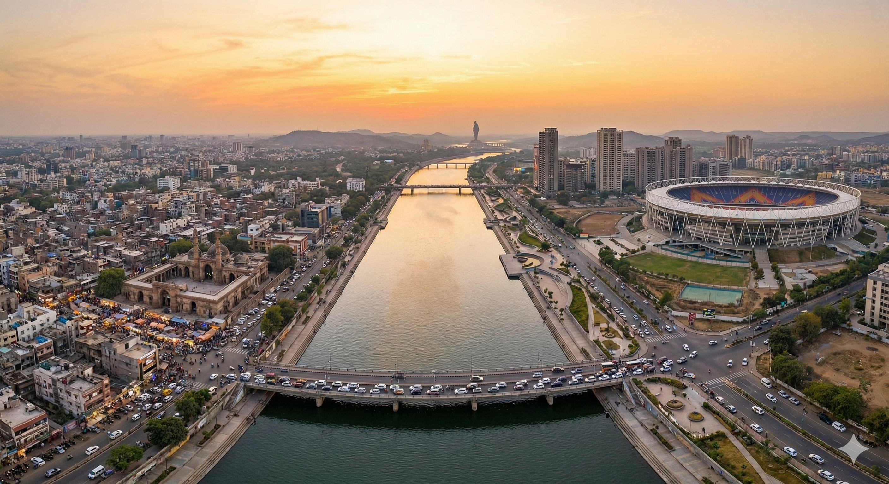

Ahmedabad is the largest city in the Indian state of Gujarat, located in western India along the banks of the Sabarmati River. The city lies at an average elevation of approximately 53 meters (174 feet) above sea level and was founded in 1411 AD by Sultan Ahmad Shah, after whom it is named.
Area: Approximately 505 Square Kilometres
Ahmedabad represents a vibrant blend of rich historical heritage and rapid modern development. Often referred to as the “Manchester of India” due to its historic textile industry, the city is also recognized as a UNESCO World Heritage City. From centuries-old mosques and stepwells to bustling bazaars and modern business districts, Ahmedabad reflects a unique cultural and economic identity.
Summer: March–June (Up to 45°C)
Monsoon: July–September (Moderate to Heavy Rainfall)
Winter: November–February (As low as 12°C)
Best Time: October to February
Time Zone: IST (UTC +5:30)
Population: ~8.8 Million
Languages: Gujarati, Hindi, English, Urdu
Literacy: 89%
Republic Day: 26th Jan
Independence Day: 15th Aug
Gandhi Jayanti: 2nd Oct
Major Festivals: Uttarayan, Navratri, Diwali, Eid, Christmas, Janmashtami, Holi, Rath Yatra, Maha Shivratri, Ganesh Chaturthi
Police: 100
Fire: 101
Ambulance: 108
General Info: +91 88888 88888

Ahmedabad’s rental market has generally remained stable, with renewed demand in recent years—particularly in premium residential localities. While the market experienced a slowdown during the 2009 economic downturn, it has since regained momentum due to improved infrastructure and new developments. Properties in expatriate-preferred neighbourhoods typically command higher rental premiums.
When selecting a residential location, it is important to consider commuting distance, traffic congestion, access to transportation, and proximity to offices, schools, and daily markets. Although auto rickshaws and public buses are widely used by locals, expatriates generally prefer personal vehicles or chauffeur-driven taxis for comfort, safety, and reliability.
Preferred expatriate and premium residential areas include:
Central & West Ahmedabad: Satellite, Vastrapur,
Prahladnagar, Bodakdev, Navrangpura
North-West Corridor: Thaltej, SG Highway,
Shantigram Township
Emerging Areas: Locations near GIFT City and
developing industrial corridors
Areas along SG Highway and near GIFT City are increasingly popular among expatriates and corporate professionals due to modern housing, improved connectivity, and proximity to business hubs.
Ahmedabad offers a selection of premium hotels suitable for short-term stays. Demand can be high during peak business seasons and major festivals, so advance reservations are strongly recommended.
Popular options include The House of MG, Hyatt Regency, Taj Skyline, Radisson Blu, and Courtyard by Marriott.
Long-term housing options include apartments, villas, row houses, and independent bungalows. Gated communities are common and typically provide 24-hour security, power backup, maintenance services, and lifestyle amenities such as clubhouses, gyms, and swimming pools.
Independent houses offer greater privacy and space, often with gardens and terraces, but may require separate arrangements for security. Villa townships near SG Highway and Shantigram combine the privacy of independent homes with the safety and amenities of gated living.
Breakdown of available properties:
Availability: Good across most residential
zones.
Types: Detached (~40%), Semi-detached
(~60%).
Style: 3–4 bedroom bungalows with attached
bathrooms, kitchen, living and dining areas, and small
gardens.
Average Age: 10–15 years.
New Construction (<5 years): ~15%.
Availability: Good in both central and suburban
areas.
Building Type: Small buildings (~55%), Large
complexes (~45%).
Style: 1 master bedroom with 2–3 additional
bedrooms, attached bathrooms, kitchen, living and dining
areas.
Average Age: 5–10 years.
New Construction (<5 years): ~20%.
Ahmedabad offers housing options across low, medium, and high budgets. Premium neighbourhoods often feature landscaped parks, walking tracks, and community spaces. It is advisable to visit shortlisted properties at different times of the day to assess traffic, noise levels, and overall accessibility.
Serviced apartments in Ahmedabad generally fall into the following categories:
A. Professionally Managed Serviced Apartments
• Fully furnished units with dedicated housekeeping and managed
services, typically located in central or business districts.
B. Standalone Serviced Apartments
• Located within residential neighbourhoods; quality and service
levels may vary.
C. Guest Houses
• Shared accommodation options; generally not recommended for
expatriates.
Always confirm availability of internet, telephone lines, laundry services, and security arrangements before finalizing accommodation.
In Ahmedabad, it is standard practice to provide a refundable, interest-free security deposit equivalent to 2 to 6 months’ rent, depending on the property type and landlord preferences.
Confirm whether rent includes maintenance charges. Utility setup costs are usually borne by the landlord, while monthly usage charges are paid directly by the tenant.
Furniture leasing services are available through local vendors and online platforms. Most leased furniture is pre-owned and offered with flexible rental terms. Availability and variety may vary based on location and vendor.

Ahmedabad has a well-developed and reliable financial and banking ecosystem, supported by public-sector banks, private-sector banks, and a limited presence of multinational banks. The city provides essential banking, foreign exchange, and digital payment services suitable for residents, expatriates, and business professionals.
The official unit of currency in India is the Indian Rupee (INR).
Credit cards are widely accepted in Ahmedabad, particularly in shopping malls, branded retail outlets, fine dining restaurants, hotels, and business establishments.
Most Indian banks issue credit cards with revolving credit limits and cash advance facilities.
RuPay, VISA, and MasterCard are commonly accepted. American Express acceptance is limited and is usually restricted to premium hotels and select high-end establishments.
Note: International credit card transactions may attract foreign currency or processing fees. Please confirm applicable charges with your issuing bank.
Ahmedabad has an extensive ATM network across residential neighborhoods, commercial areas, shopping centers, and business districts.
Traveller’s cheques can be purchased or encashed at leading public and private banks, as well as authorised money changers in Ahmedabad.
Commonly available currencies include US Dollar and British Pound Sterling, while other major currencies may be available at select banks.
A valid passport is required when purchasing or encashing traveller’s cheques.
Ahmedabad hosts a mix of government-owned public-sector banks, private Indian banks, and a limited number of multinational banks.
Typical Banking Hours:
Most banks operate between 10:00 – 16:00 on weekdays, though
some branches may open as early as 09:30 or close as late as
18:00.
Under Indian Foreign Exchange and Income Tax regulations, foreign nationals employed in India are generally permitted to open one bank account per city.
Relocation consultants or corporate HR teams can assist in opening the following account types:
Documentation requirements vary by bank but typically include:
The account opening process generally takes 2 to 10 working days, subject to verification. ATM/debit cards are issued upon request.
Most major banks in Ahmedabad provide secure internet and mobile banking services, including:
Internet banking services are widely used, reliable, and supported by strong digital infrastructure across the city.

Common health risks in Ahmedabad include cholera, dengue fever, dysentery, hepatitis, malaria, meningitis, and typhoid. Mosquito-borne diseases are more prevalent during and after the monsoon season.
While Ahmedabad’s overall air quality is better than some larger Indian metros, pollution levels can increase in industrial areas and during periods of heavy traffic, which may affect individuals with respiratory conditions.
It is strongly advised to ensure that all routine vaccinations are up-to-date prior to arrival, particularly for long-term residents and families.
In a medical emergency, it is important to be aware of the nearest hospital. Traffic congestion in Ahmedabad can delay ambulance response times, especially during peak hours.
Using a private vehicle or app-based taxi services such as Uber or Ola is often faster than waiting for an ambulance. Always carry personal identification, including your passport or Residential Permit (FRRO/RP), when travelling.
Ahmedabad has a strong private healthcare network with modern medical facilities and experienced, English-speaking doctors in most premium hospitals.
Medical treatment costs are relatively affordable compared to Western countries, while still offering high-quality care and advanced diagnostic services.
Most medications are easily available at pharmacies throughout Ahmedabad, often without a prescription. However, antibiotics and certain regulated medicines may require a valid prescription.
If you are already taking medication, inform your doctor to avoid potential drug interactions.
Emergency Ambulance Service (Gujarat): 108
Police Emergency Number: 100

Education in Ahmedabad is available from Kindergarten through Higher Education. Early education primarily follows the kindergarten model, while primary and secondary education is offered through a wide range of state, national, and international education boards.
Schools in Ahmedabad are affiliated with various boards including Gujarat State Board, Central Board of Secondary Education (CBSE), Council for the Indian School Certificate Examinations (CISCE), National Institute of Open Schooling (NIOS), Cambridge Assessment International Education (IGCSE), and the International Baccalaureate (IB) .
After completing secondary education, students progress to Higher Secondary (Grades 11 and 12) or Pre-University Courses (PUC). Successful completion enables entry into colleges, universities, and professional institutions. Ahmedabad hosts numerous colleges, universities, and institutes offering undergraduate, postgraduate, research, and professional programs.
With Ahmedabad’s emergence as a major industrial and business hub, the number of international schools serving expatriate and NRI families has grown steadily. These schools welcome students of all nationalities and reflect cultural diversity in their curriculum and teaching approach.
Educating children in Ahmedabad offers exposure to a balanced mix of Indian traditions and global perspectives, making it a rewarding experience for expatriate families.
Ahmedabad’s expanding international business presence has increased the demand for foreign language learning. The city offers several institutes providing instruction in global and Indian languages.
Electricity in Ahmedabad is supplied primarily by Torrent Power Ltd.. Electricity tariffs are relatively high and increase based on consumption slabs.
Water supply in Ahmedabad is managed by the Ahmedabad Municipal Corporation (AMC). Independent houses receive monthly water bills.
Door-to-door garbage collection is available in most parts of Ahmedabad, managed by the Ahmedabad Municipal Corporation. Gated communities may follow designated collection schedules.
Bottled LPG is supplied by government-authorised providers including:
A refundable security deposit and proof of address are required for new connections. Most households maintain two cylinders to ensure uninterrupted supply.
Ahmedabad’s tropical climate makes periodic pest control essential to prevent cockroaches, mosquitoes, and flies. Many professional pest control services operate across the city.
Recommendation: Conduct pest control every 3–6 months and ensure that WHO-approved chemicals are used, especially in homes with children or pets.

Once you move into your residence in Ahmedabad, local cable network personnel typically visit the property to set up your cable television connection. A nominal one-time installation fee is charged.
Installation generally takes around 2 days. Thereafter, a monthly subscription fee is payable, usually in cash, and a receipt is issued by the cable operator for each payment.
Cable television services provide access to a wide range of national and international channels including STAR, ESPN, HBO, National Geographic, Discovery , along with Hindi, Gujarati, and other regional channels.
For a complete and updated channel list, it is advisable to check directly with your local cable operator.
Direct-To-Home (DTH) satellite television services are widely available across Ahmedabad. Popular service providers include:
DTH services involve a one-time setup cost covering the dish antenna, receiver, and an initial subscription package. Installation typically takes 2–5 working days, depending on technician availability.
DTH providers offer standard-definition and HD channels across multiple languages. Subscription packages can be customised based on viewing preferences, and authorised dealers are available through local electronics outlets and online service platforms.
Ahmedabad has numerous FM and AM radio stations that broadcast free of charge. Listeners can tune in using standard radio receivers, car audio systems, or online streaming platforms.
Radio programming includes music, news, talk shows, and entertainment content in Gujarati, Hindi, and English.
Ahmedabad offers a wide selection of daily newspapers in Gujarati and English.
Popular Gujarati dailies include:
Popular English dailies include:
Newspapers can be subscribed to through local distributors, purchased from neighbourhood stalls, or accessed via online and digital editions.
Post offices are conveniently located throughout Ahmedabad, often close to residential neighbourhoods, and provide a comprehensive range of postal and financial services through India Post.
General Post Office (GPO), Ahmedabad:
Behind Relief Cinema, Salapas Road, Ahmedabad – 380001
Phone: 079-25500977
For premium postal services such as Speed Post, Business Post, and EMS, specialised facilities like the ONGC Sub Post Office offer additional value-added services and online tracking.
Postal services available include:
For accurate information on service availability, delivery timelines, and applicable rates, it is recommended to visit your nearest post office or consult the official India Post resources.

Telephone and internet services in Ahmedabad are widely available through both government-owned and private telecommunications providers, with good coverage across residential, commercial, and business areas.
Landline telephone services are provided by BSNL (government-owned) and private operators such as Airtel, Vodafone Idea (Vi), and Jio.
Installation timelines vary by provider. BSNL landline installations generally take 7–14 days, while private providers usually complete setup within 2–5 working days.
Documents Required:
A refundable security deposit and installation charges are payable at the time of application. For private service providers, calls made beyond the deposited amount before the billing cycle ends may result in temporary disconnection.
Monthly bills are issued with a clearly mentioned due date and can be paid at service provider offices, authorised bill payment centres, or through online payment portals.
In some cases, landlords may provide a pre-installed landline connection, in which case tenants are responsible only for monthly rental and usage charges.
International calling can be activated on request at the time of subscription. Applicable tariffs should be confirmed with the service provider.
All major telecom operators in Ahmedabad support international calling. Users must request activation of this service during sign-up or through customer care.
The international dialling prefix used in India is 00, followed by the country code.
Public phone booths displaying PCO / STD / ISD signs are now extremely rare in Ahmedabad due to the widespread use of mobile phones. Residents are advised to rely on mobile or landline services for communication.
Ahmedabad has strong mobile network coverage with major GSM service providers including Jio, Airtel, Vodafone Idea (Vi), and BSNL.
Operators offer a wide range of prepaid and postpaid plans to suit individual and corporate usage requirements.
Postpaid connections require an activation fee and a refundable security deposit. An additional deposit may be required for international roaming.
Prepaid SIM cards are widely available from authorised mobile retailers and local vendors across the city.
As per government regulations, activation of any new mobile connection requires submission of a valid photo ID and proof of address.
Mobile network quality and data speeds may vary by locality. Residents often compare operators using speed tests to determine the best coverage in their specific area.
Broadband and high-speed internet services in Ahmedabad are offered by multiple operators, including:
Internet connections are primarily delivered through fiber-optic networks, offering stable and high-speed connectivity suitable for streaming, video conferencing, and remote working.
Coverage and actual internet speeds may vary by neighborhood. Recent assessments have shown significant differences in mobile and broadband speeds across the city, so confirming area-specific availability before finalising a connection is recommended.
Gujarat, including Ahmedabad, has seen steady growth in mobile subscriptions and ongoing expansion of 4G and 5G infrastructure, with leading operators continuing to invest in improved connectivity.

Ahmedabad offers a mix of public and private transportation options for residents, professionals, and expatriates. The city is served by app-based cabs, auto rickshaws, city buses, a Bus Rapid Transit System (BRTS), and a growing metro rail network.
For expatriates, the use of app-based cabs or chauffeur-driven vehicles is generally preferred due to convenience, comfort, and ease of navigation.
App-based ride-hailing services are widely used across Ahmedabad and are considered safe and reliable for daily commuting and airport travel.
Bookings are made through mobile applications by entering the pickup and destination locations. Navigation support through Google Maps is commonly used by drivers.
Auto rickshaws are easily available throughout Ahmedabad and are most suitable for short-distance travel.
Passengers should insist on using the meter and avoid paying more than the displayed fare. If the meter is not used, agree on the fare before starting the journey.
Public bus services in Ahmedabad are operated by the Ahmedabad Municipal Transport Service (AMTS) and the Bus Rapid Transit System (BRTS – Janmarg).
BRTS is well-suited for cross-city commuting and is considered an environmentally friendly public transport option.
The Ahmedabad Metro has been operational since March 2019 and currently covers Phase-1 corridors (East–West and North–South), spanning approximately 40 km with 47 stations.
Average daily ridership is around 130,000 passengers. The metro is gradually expanding to improve connectivity between residential, commercial, and institutional zones.
Phase-2 development includes extensions connecting Motera Stadium to Gandhinagar and GIFT City, with the Violet Line linking key locations such as GNLU, PDEU, and GIFT City, which became operational in September 2024.
Name: Sardar Vallabhbhai Patel International
Airport
Location: Approximately 9 km from the city
centre
Connectivity Options:
The CTM Expressway provides a smooth connection to the airport area and is serviced by both AMTS and BRTS routes, including Route 12U.
Car rental services in Ahmedabad include both self-drive and chauffeur-driven options, available through local agencies and app-based platforms.
Given city traffic conditions, chauffeur-driven vehicles are generally recommended for expatriates and first-time residents.
Driving in Ahmedabad may be challenging for newcomers due to mixed traffic patterns and limited lane discipline in certain areas.
Expatriates who own vehicles are advised to employ experienced local drivers or familiarise themselves thoroughly with local driving norms.
The Ahmedabad Urban Development Authority (AUDA) has initiated a Comprehensive Mobility Plan (CMP) aimed at integrating metro rail, AMTS, BRTS, and regional rail systems through 2041 to support seamless, sustainable urban transportation.

Indian nationals and foreign nationals, including persons of Indian origin, transferring their residence to Ahmedabad or arriving in India for employment are permitted to import personal effects and household goods into India duty-free, subject to eligibility conditions and prevailing customs regulations.
For Indian nationals, the following criteria must be fulfilled:
For foreign nationals, the following conditions apply:
Shipments dispatched beyond the prescribed timelines may be cleared only on a case-by-case basis, subject to approval by customs authorities.
It is mandatory that the owner arrives in India before the shipment. Failure to do so can result in significant demurrage or container detention charges.
Shipments destined for Ahmedabad are generally cleared at Sardar Vallabhbhai Patel International Airport for air cargo or at major sea ports such as Mumbai (JNPT), followed by inland transportation to Ahmedabad.
The earlier requirement of a compulsory one-year stay in India after availing Transfer of Residence (TR) benefits has been removed. Importers are permitted to leave the country after claiming TR concessions.
Old and used personal effects and household goods are permitted duty-free, provided they have been used by the shipper and the individual holds a valid one-year visa.
Examples include:
The following items are permitted at a concessional customs duty rate of 15% for one unit of each item, subject to a combined value limit of ₹5,00,000, irrespective of prior usage:
The concessional duty rate of 15% applies only to the first unit of each eligible item.
If additional units are imported or if the combined value exceeds ₹5,00,000, a higher customs duty of 35% will be levied on the excess quantity or value.
Import duties on alcoholic beverages, wines, and spirits are extremely high in India and are typically assessed at approximately 200% of the value as determined by customs authorities.

Ahmedabad has a growing and welcoming expatriate community, supported by social groups, online platforms, and informal networks that help newcomers connect, socialise, and adapt to life in the city.
One of the most active global expatriate networks in the city is InterNations – Ahmedabad Chapter. This friendly community hosts regular meetups, coffee mornings, social gatherings, and interest-based events, making it an excellent platform for meeting people and seeking guidance on settling into city life.
Another popular platform is Meetup – Expats in Ahmedabad, an open group where expatriates organise informal get-togethers such as coffee chats, movie outings, cultural walks, and casual social activities.
Online communities such as the “Ahmedabad Social Circle” on Reddit also play an important role. These weekly discussion threads are used by expatriates and locals alike to ask questions, share recommendations, find companions for outings, and connect with people facing similar relocation experiences.
Ahmedabad offers a balanced mix of modern entertainment and traditional cultural experiences. While the city is more relaxed compared to larger metros, it provides plenty of options for leisure, socialising, and family-friendly recreation.
From clubs and shopping malls to theatres, cultural centres, and hobby groups, expatriates can enjoy a wide range of activities suited to different lifestyles.
Ahmedabad has a well-developed multiplex culture, with many theatres located within shopping malls, offering a convenient entertainment experience for families and professionals.
Ahmedabad’s cultural scene is reflected in its auditoriums and live performance venues that host theatre, music, dance, and cultural events.
Ahmedabad has a strong cultural and artistic heritage, with spaces dedicated to science, theatre, and regional arts.
Ahmedabad hosts several informal, interest-based groups that offer opportunities to connect with like-minded individuals. These groups are often organised through social media platforms, Reddit, or local community centres.
Many expatriates and locals highlight the friendly and supportive nature of these communities, making it easier to build social connections and explore the city together.

Shopping in Ahmedabad is a vibrant and culturally rich experience, seamlessly blending centuries-old traditional markets with modern malls and upscale retail destinations. Historically known for its textile industry and often referred to as the “Manchester of India,” the city offers a diverse retail landscape reflecting both heritage and contemporary lifestyles.
From colourful street bazaars selling fabrics, handicrafts, jewellery, and street food to premium malls housing global fashion brands and luxury outlets, Ahmedabad caters to every kind of shopper. Whether you are looking for traditional Gujarati textiles, ethnic wear, home décor, or modern lifestyle products, the city provides a wide range of options.
Shopping districts are spread across the historic Old City as well as newer commercial corridors like C.G. Road and SG Highway, offering a mix of bustling street markets and air-conditioned retail spaces.
One of the oldest and busiest street markets in Ahmedabad’s Old City, Lal Darwaja is a bargain hunter’s paradise. The market offers sarees, dress materials, footwear, accessories, books, wallets, and more, along with popular street food such as pani puri, dhokla, and samosas.
A traditional fabric market located in the Old City, Dhalgarwad is known for sarees, Bandhani textiles, silver jewellery, and ethnic dress materials. It is particularly popular for wedding and festive shopping.
Sindhi Market is well known for upholstery fabrics, handicrafts, sarees, footwear, cushions, and home décor items, often available at reasonable prices.
A unique multi-purpose market that changes character throughout the day. Mornings are dedicated to vegetables, afternoons to jewellery trading, and nights transform the area into a vibrant street food hub and fabric shopping destination.
Famous for Kutchi mirror-work garments, beadwork, ethnic clothing, and handicrafts, this evening market is a favourite for festival shopping and souvenirs.
A Sunday-only flea market held near the Sabarmati Riverfront. Ravivari is popular for antiques, used goods, kitchenware, books, clothing, and handcrafted items, often sold at very low prices.
One of Ahmedabad’s most prominent shopping streets, C.G. Road is lined with retail arcades, branded showrooms, cafés, and malls such as Super Mall, CG Square Mall, and Iscon Mall.
Located near Manek Chowk, this historic tomb complex also hosts stalls selling block-printed textiles, silver jewellery, traditional fabrics, and unique handcrafted keepsakes.
In addition to these major markets, most residential neighbourhoods in Ahmedabad have local shopping areas offering groceries, daily essentials, pharmacies, and convenience stores.
Opened in 2011 and located in Vastrapur, this large mall houses popular global and Indian brands such as Nike, Shoppers Stop, and Pantaloons, along with a Cinépolis multiplex and multiple dining options.
A premium shopping destination on the Sarkhej–Gandhinagar Highway, Palladium features over 220 brands spread across six floors, along with a nine-screen PVR multiplex. It offers a modern, comfortable, and upscale shopping experience.
One of the largest malls in Ahmedabad, Iscon Mega Mall offers a wide range of retail stores, eateries, and leisure facilities in a spacious and contemporary environment.
Located on C.G. Road, this mall features branded retail outlets, food courts, and entertainment options, making it ideal for relaxed shopping and casual outings.
Situated on the Gandhinagar Highway, this family-friendly mall offers retail shopping, entertainment zones, a theatre, and a variety of dining experiences.
Ahmedabad’s shopping scene offers a well-rounded mix of traditional craftsmanship and contemporary retail, allowing residents and expatriates to enjoy everything from cultural street markets and everyday essentials to premium brands and modern lifestyle experiences.